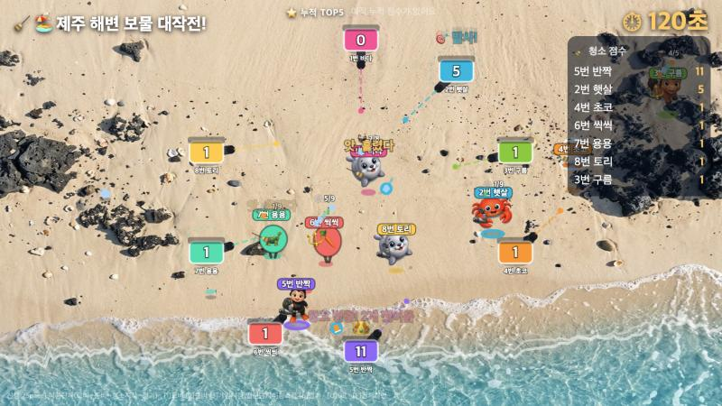

JEJUGRAPHER가 만든 체험 게임
QR 하나로 다 함께,
대형화면에서 즐기는 멀티플레이
계정도 앱 설치도 없이, 폰으로 QR을 찍으면 바로 참여합니다. 제주그래퍼가 직접 기획·제작한 체험형 웹 게임 모음입니다. 행사장·교실·전시장 대형화면에 띄우고 여럿이 함께 즐겨 보세요.
GAME 01
🧹 청소 대작전

최대 10명 · 멀티플레이
내가 고른 캐릭터로 함께 청소!
캐릭터를 고르고 장비를 갖춰 나만의 캐릭터를 완성해, 랜덤으로 정해지는 제주 맵(마을·해변·계곡·곶자왈)을 누비며 쓰레기를 치우는 청소 경쟁 게임. 캐릭터·장비마다 지형별 강점이 달라 "잘 골랐나?"를 겨루는 재미가 있습니다.
① 접속QR 찍고 번호·별명
→
② 고르기캐릭터·장비 선택
→
③ 청소랜덤 맵 경쟁
→
④ 시상청소왕·순위


사용법: 대형화면(PC·프로젝터)에서 ‘대형화면으로 게임 열기’를 열면 방 코드·QR과 함께 ‘🕹️ 컨트롤 화면 열기’ 링크가 뜹니다. 아이들은 폰으로 QR을 찍어 참여(같은 인터넷망 필요), 진행자는 컨트롤 화면(노트북)에서 인원 확인·시작·맵 선택·초기화를 조작합니다. 10명이 차면 자동 시작되고, 끝나면 점수·별명이 저장된 뒤 자동으로 초기화되어 다음 팀을 받습니다.